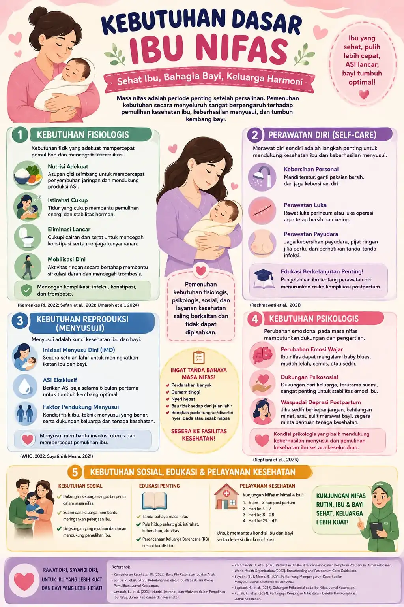
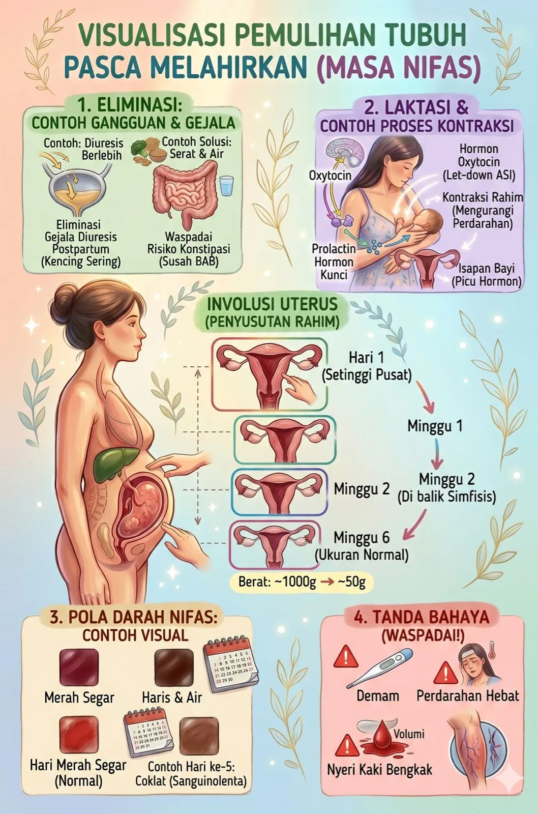

Masa Nifas
Pelajari tahapan dan perawatan masa nifas
Pengertian Masa Nifas
Masa nifas (puerperium) adalah masa pemulihan setelah persalinan, yaitu rentang waktu dari saat plasenta lahir hingga organ-organ reproduksi kembali ke kondisi seperti sebelum hamil. Masa ini biasanya berlangsung selama 6-8 minggu atau sekitar 40 hari.
Durante el masa nifas, tubuh ibu akan mengalami:
Tahapan Masa Nifas

Early Postpartum
0-7 Hari
Masa awal pemulihan dengan lochia berbobot banyak (rubra). Ibu perlu banyak istirahat dan melakukan perawatan perineum.
Middle Postpartum
8-28 Hari
Lochia mulai berkurang dan warnanya berubah (serosa). Ibu sudah bisa melakukan aktivitas ringan namun tetap perlu istirahat cukup.
Late Postpartum
29-42 Hari
Masa penyembuhan akhir. Lochia menjadi semakin sedikit dan berwarna putih. Organ reproduksi hampir kembali normal.
Perawatan Masa Nifas

1. Perawatan Perineum
Jaga kebersihan area perineum dengan mencucinya setiap kali setelah buang air kecil atau besar. Gunakan air hangat dan keringkan dengan lembut.
2. Istirahat yang Cukup
Tidurlah saat bayi tidur. Kebutuhan tidur ibu nifas meningkat karena tubuh sedang dalam proses penyembuhan.
3. Nutrisi Seimbang
Konsumsi makanan bergizi tinggi protein, zat besi, dan vitamin untuk mempercepat pemulihan dan mendukung produksi ASI.
4. Aktivitas Fisik Bertahap
Mulai dengan aktivitas ringan seperti jalan kaki, lalu tingkatkan secara bertahap. Hindari mengangkat benda berat selama beberapa minggu.